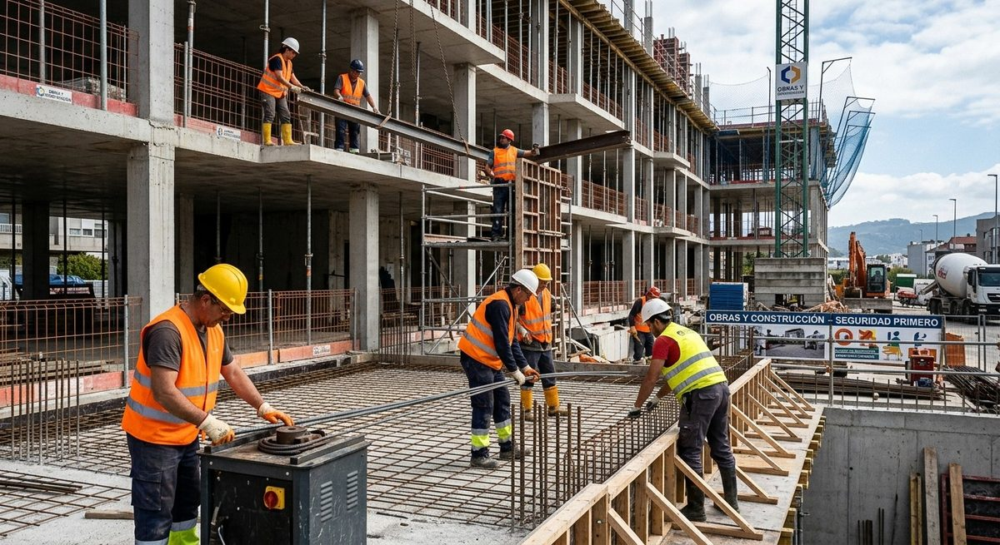
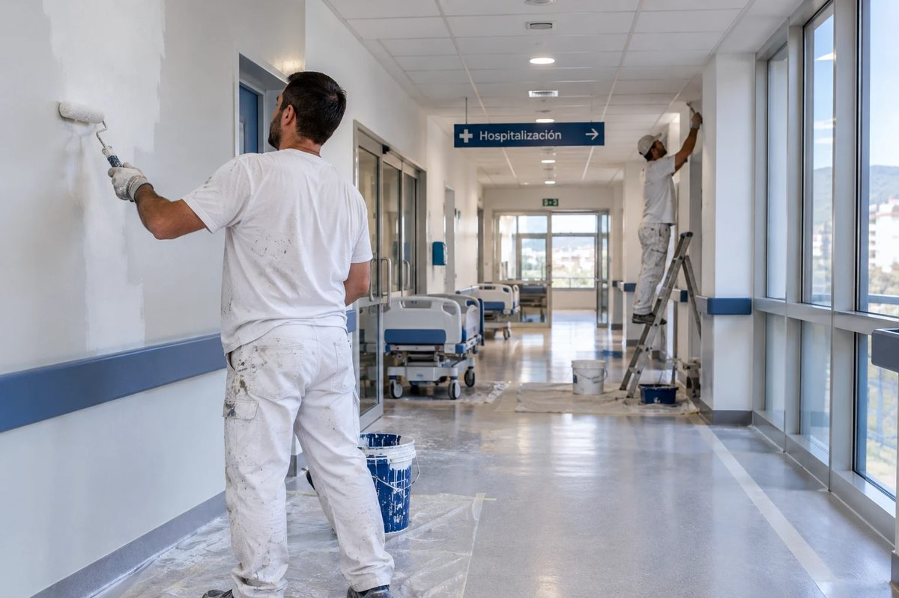

Obra civil y pública
Carreteras, viales, puentes, estructuras y urbanización para administraciones locales y autonómicas.
Santiago de Compostela · Galicia
Procaba Vercel ejecuta obra pública y edificación con rigor técnico, plazos cumplidos y un equipo que conoce el territorio desde la primera piedra.
La empresa
Somos una constructora gallega especializada en obra pública e infraestructuras. Trabajamos para administraciones, promotores y empresas que buscan un socio fiable: alguien que planifique bien, ejecute con precisión y responda cuando surge un imprevisto.
Desde nuestra sede en Santiago de Compostela y la delegación Lugo-Ponferrada coordinamos equipos propios de obra, jefatura técnica y control de calidad, con presencia directa en cada proyecto.
Servicios
Carreteras, viales, puentes, estructuras y urbanización para administraciones locales y autonómicas.
Equipamientos, vivienda y edificios terciarios e industriales, de proyecto a entrega de llaves.
Abastecimiento, saneamiento, depuración y gestión de aguas pluviales con control de calidad.
Intervención en patrimonio y edificios existentes, respetando el entorno histórico y constructivo.
Excavaciones, explanaciones, cimentaciones y trabajos geotécnicos con maquinaria propia.
Contratos de mantenimiento de infraestructuras y respuesta rápida ante incidencias.
Obras destacadas


Método de trabajo
Analizamos proyecto, entorno y riesgos antes de ofertar.
Programa de obra, recursos y calidad definidos por escrito.
Jefatura de obra presente y seguimiento semanal con el cliente.
Documentación final, recepción y servicio posventa.
Presencia
Calle da Vida, 4B · Santiago de Compostela
+34 981 569 065 info@procaba.esCalle Mayor, 45
+34 982 123 456 +34 600 112 233 d.castro@procaba.es Darío Castro Real · Director de ZonaContacto
Cuéntanos qué necesitas y te responderemos en menos de 48 horas laborables.